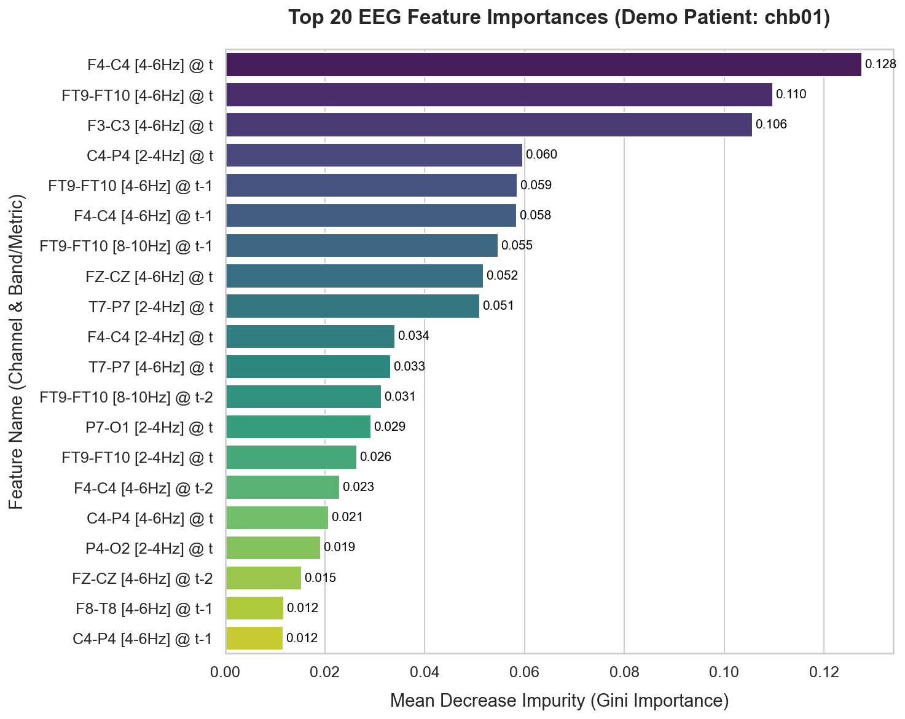
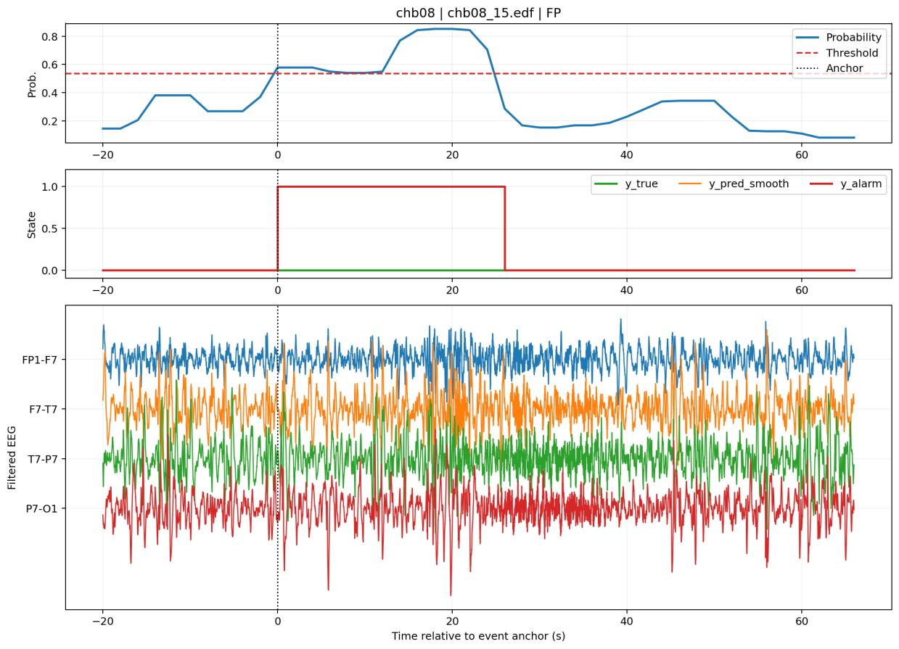

事件
用捕获率、每小时误报和检出延迟评价，而不只看单窗口预测。
生物医学信号处理 · 事件级机器学习
一项患者特异性的回顾性研究：从多通道头皮 EEG 中提取时频与同步性线索，通过折内特征选择和随机森林生成概率，再用明确的时间逻辑形成发作事件。
01 · 问题
EEG 是连续、多通道且噪声丰富的信号。每个两秒窗口的阳性概率，只有在跨时间保持一致、并能对照事件标签和误报率时，才有临床工程意义。
因此该项目的重点不是只提高窗口级指标，而是让信号处理、特征选择、模型阈值、时间后处理和事件级评分在同一评估设计中彼此衔接。
用捕获率、每小时误报和检出延迟评价，而不只看单窗口预测。
每位受试者分别建模；没有把结果表述为对新患者的泛化能力。
特征和阈值只在训练数据内部决定，再面对外层留出记录。
02 · 从信号到事件
CHB-MIT EDF · 22 个双极通道
0.5–50 Hz 滤波 · 2 秒片段 · 频谱、同步性和时间特征
1,772 个候选输入 · Top-30 特征
500 棵树的随机森林
平滑、阈值和持续性规则
03 · 特征与模型
每个两秒窗口先产生 440 个频谱频带能量和 3 个同步性相关量；结合当前窗口及前三个窗口，形成 1,772 个候选输入。每个外层评估中，特征重要性只由内部训练数据估计，并选择 Top-30 输入。
主分类器是 500 棵树的随机森林。它生成每个窗口的事件概率，后续的平滑、阈值和持续性规则将概率序列转化为事件决定。

04 · 经核对的研究结果
10 位受试者事件敏感度的算术平均。
10 位受试者每小时误报事件率的中位数。
跨所有受试者汇总的事件计数。
约为 0.3066 次每小时。


05 · 证据边界
这项研究支持：在所报告的 10 人回顾性、患者特异性协议中，工程流程能够把多通道 EEG 转为可检查的事件级结果；特征选择、阈值选择与外层测试相互隔离。
这项研究不支持：对未见患者的冷启动表现、外部或前瞻性临床验证，或可直接部署到嵌入式设备。零相位滤波和居中平滑是回顾性的，流式系统需要重新设计并验证因果版本。
项目链接